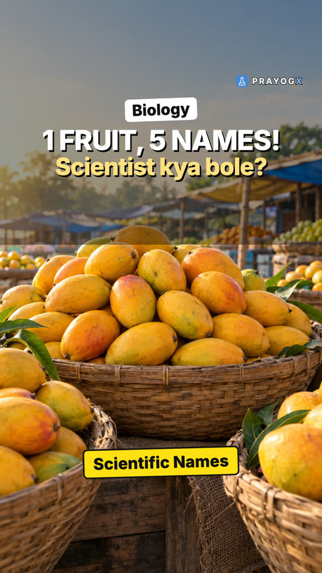

The Living World: Chapter Introduction
Video not playing? YouTube
A mule cannot reproduce, yet it is alive. Metabolism, cellular organisation and consciousness define life; binomial names and the taxonomic hierarchy organise 1.7-1.8 million described species.
Download the short notesPDF, 169 KB · solved examples, practice set and answer key Download the workbook
PDF, 175 KB · fill in the blanks, true/false, assertion-reason, MCQ, numericals, short answer, match the columns; detailed solutions at the end Up next in this chapter

Why Every Organism Needs One NameAam, mango, maamidi: one fruit, many names, and one word robin for two different birds. With about 1.8 million species, science needs one name per organism.BiologyKey points
- Growth and reproduction are not defining: non-living masses grow from outside, and mules do not reproduce.
- Metabolism, cellular organisation and consciousness are defining features of life.
- About 1.7-1.8 million species are described: this variety is biodiversity.
- Binomial nomenclature (Linnaeus): genus + species, e.g. *Mangifera indica*, *Homo sapiens*; ranks kingdom → species.
What makes something living
| Feature | Defining? | Reason |
|---|---|---|
| Growth | No | Mountains, boulders and sand mounds also grow, by accumulation from outside |
| Reproduction | No | Mules, sterile worker bees and infertile couples do not reproduce |
| Metabolism | Yes | All living organisms carry out chemical reactions; no non-living object does |
| Cellular organisation | Yes | All life is made of cells |
| Consciousness | Yes | Living organisms sense and respond to their surroundings |
Naming organisms
The same mango tree has different local names (aam, mango). Binomial nomenclature, given by Carolus Linnaeus, gives every organism one scientific name of two parts: the genus (capital letter) and the specific epithet (small letter), printed in italics or underlined when handwritten.
Mangifera indica (mango) · Homo sapiens (human)
The taxonomic hierarchy
Kingdom → Phylum/Division → Class → Order → Family → Genus → Species
Moving from kingdom to species, organisms share more and more characters.
Quick quiz
5 questions. Choose an answer for each, then submit to see your score and the explanations.